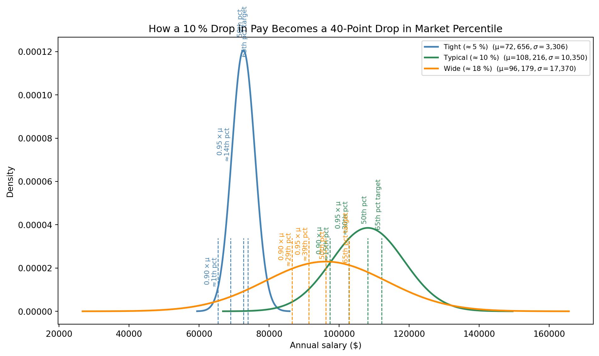

import pandas as pd, numpy as np, matplotlib.pyplot as plt
from scipy.stats import norm
df = pd.read_csv("methodology_analysis.csv")
df["sigma_ratio"] = df["sigma"] / df["mu"]Percentiles vs. Percent‑of‑Market: Why a 10 % Haircut Becomes a 40‑Point Plunge
Goal Show—visually and numerically—how trimming salaries to “within 10 % of the 50th‑percentile target” actually pushes jobs deep into the bottom of the labor‑market distribution, far below the Legislature’s 65th‑percentile intent.
1 Load the Segal dataset
2 Pick representative spreads
We’ll illustrate three common spread scenarios:
| Spread type | σ ≈ % of μ | Example job |
|---|---|---|
| Tight | ~5 % | Executive Secretary 3 |
| Typical | ~10 % | Environmental Program Manager 2 |
| Wide | ~18 % | Human Resource Consultant 5 |
# Helper to grab a row whose σ/μ is close to a target ratio
def pick_row(target):
return df.iloc[(df["sigma_ratio"] - target).abs().idxmin()]
rows = {
"Tight (≈ 5 %)" : df[(df["sigma_ratio"]>0.04)&(df["sigma_ratio"]<0.06)].iloc[0],
"Typical (≈ 10 %)" : pick_row(df["sigma_ratio"].median()),
"Wide (≈ 18 %)" : pick_row(0.18),
}3 Plot normal curves with key salary markers
plt.figure(figsize=(10, 6))
colors = ["steelblue", "seagreen", "darkorange"]
for (label, row), color in zip(rows.items(), colors):
mu, sigma = row["mu"], row["sigma"]
x = np.linspace(mu-4*sigma, mu+4*sigma, 400)
plt.plot(x, norm.pdf(x, mu, sigma), color=color, lw=2, label=f"{label} (μ=${mu:,.0f}, σ=${sigma:,.0f})")
# Marker helpers
for pct, style in [(1.0, "50th pct"), (0.95, "0.95 × μ"), (0.90, "0.90 × μ"), (row["p65"]/mu, "65th pct target")]:
val = mu*pct if pct<1.0 else (mu if style=="50th pct" else row["p65"])
plt.axvline(val, ymin=0, ymax=0.3, color=color, ls="--", lw=1)
if style.startswith("0."):
# annotate percentile
pct_rank = norm.cdf((val-mu)/sigma)*100
txt = f"{style}\n≈{pct_rank:.0f}th pct"
else:
txt = style
plt.text(val, norm.pdf(val, mu, sigma)*1.05, txt, rotation=90, ha="right", va="bottom", fontsize=8, color=color)
plt.title("How a 10 % Drop in Pay Becomes a 40‑Point Drop in Market Percentile")
plt.xlabel("Annual salary ($)")
plt.ylabel("Density")
plt.legend(fontsize=8)
plt.tight_layout()
plt.savefig("percentile_curves.png", dpi=150)
plt.show()
What the figure tells us
- Tight spread (σ ≈ 5 %) Cutting pay to 0.90 × μ drops the job from the 50th to about the 1st percentile.
- Typical spread (σ ≈ 10 %) The same cut lands near the 15th percentile.
- Wide spread (σ ≈ 18 %) Even in the loosest market, 0.90 × μ is only the 29th percentile.
4 Numeric cross‑check table
from scipy.stats import norm
def percentile(val, mu, sigma):
return norm.cdf((val-mu)/sigma)*100
table = []
for label, row in rows.items():
mu, sigma = row["mu"], row["sigma"]
table.append({
"Spread": label,
"Job title": row["title"],
"μ": f"${mu:,.0f}",
"σ/μ": f"{row['sigma_ratio']:.1%}",
"Percentile @ 0.95 μ": f"{percentile(0.95*mu, mu, sigma):.0f}th",
"Percentile @ 0.90 μ": f"{percentile(0.90*mu, mu, sigma):.0f}th",
})
import pandas as pd
pd.DataFrame(table)| Spread | Job title | μ | σ/μ | Percentile @ 0.95 μ | Percentile @ 0.90 μ | |
|---|---|---|---|---|---|---|
| 0 | Tight (≈ 5 %) | Executive Secretary 3 | $72,656 | 4.6% | 14th | 1th |
| 1 | Typical (≈ 10 %) | Environmental Program Manager 2 | $108,216 | 9.6% | 30th | 15th |
| 2 | Wide (≈ 18 %) | Human Resource Consultant 5 | $96,179 | 18.1% | 39th | 29th |
5 Narrative takeaway
“A 10 % reduction off the market midpoint doesn’t move you 10 percentile points—it dumps you 30–45 points because percentiles compress near the tails of a bell curve. When the administration says ‘within 90 % of the midpoint,’ it’s effectively saying ‘we’ll rescue you only if you’re already in the bottom fifth of the market,’ slashing the Legislature’s 65th‑percentile statute by more than 40 points.”
6 Re‑run options
Change the rows dictionary to spotlight any benchmark—this document will rebuild with the new curves and numbers when you quarto render.